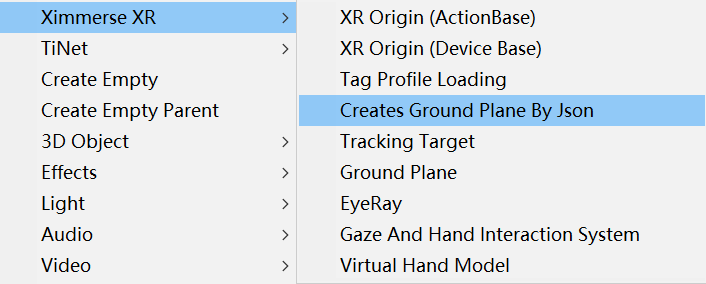
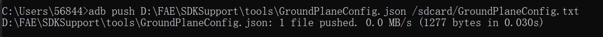
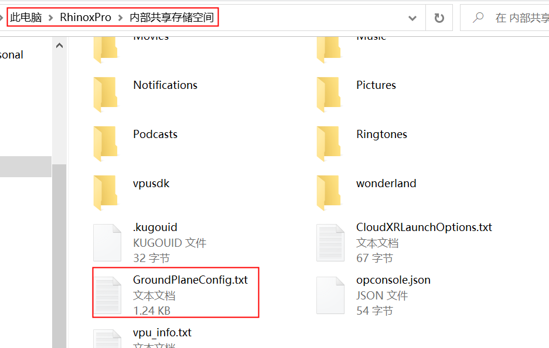

CreatesGroundPlaneByJson
描述
此组件提供一种通过配置文件自动创建Ground Plane的方法，主要用于多个定位信标进行大空间定位的场景
Note
如果您的应用经常需要更换定位信标以及改变定位信标的摆放位置，您可以优先选择此种方式，我们只需要修改配置文件即可 ，不需要重新修改程序打包
属性 |
描述 |
|---|---|
Script |
挂载组件脚本，此代码开源，开发者可根据需求更改 |
Json File Path |
加载配置文件的路径，此路径在上面的脚本中有配置，可更改 |
Auto Creates |
是否自动加载配置文件，勾选表示自动加载，不勾选，则不会自动加载配置文件 |
Debug View |
是否开启Debug模式，勾选后会在识别到的定位信标上渲染出一个坐标轴 |
使用方法
创建组件
在Hierarchy界面右键选择Ximmerse XR-> CreateGPByJson添加组件
Note
不需要在场景中手动创建Ground Plane
建议开启Debug View模式，方便检查是否识别成功
修改配置文件
配置文件模板点击 配置文件模板 进行下载，根据您实际使用的定位信标ID、数量以及定位距离需求来修改配置文件
{
"items": [
{
"beacon_id": 65,
"group_id": 1,
"position": {
"x": 0.0,
"y": 0.0,
"z": 0.0
},
"rotation": {
"x": 0.0,
"y": 0.0,
"z": 0.0
},
"coord_system_flag": 1,
"confidence_thresh": 0.8500000238418579,
"max_distance_thresh": 1.8,
"min_distance_thresh": 0.20000000298023225,
"drift_recenter_angle_threshold": 28.0,
"drift_recenter_distance_threshold": 0.75
},
{
"beacon_id": 153,
"group_id": 1,
"position": {
"x": 1.0,
"y": 0.0,
"z": 0.0
},
"rotation": {
"x": 0.0,
"y": 0.0,
"z": 0.0
"coord_system_flag": 1,
"confidence_thresh": 0.8500000238418579,
"max_distance_thresh": 5.0,
"min_distance_thresh": 0.20000000298023225,
"drift_recenter_angle_threshold": 28.0,
"drift_recenter_distance_threshold": 0.75
}
]
}
beacon_id 为定位信标的ID
group_id 用来对定位信标进行分组，所有定位信标应保持一致
position/rotation 表示GroundPlane的Transform信息，按照GroundPlane在场景中的实际坐标来设置
max_distance_thresh 表示最远跟踪距离
min_distance_thresh 表示最近跟踪距离
其他值可参照GroundPlane章节介绍，保持默认值即可
上传配置文件
通过adb命令将配置文件上传到头显固定路径下，具体方法参考下图
也可以直接将头显连接电脑，通过文件管理器，将配置文件拷贝到头显根目录下，具体方法参考下图
